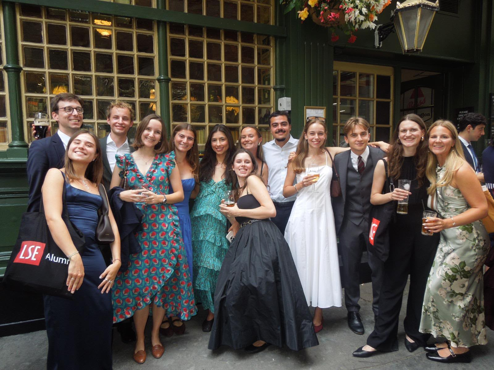
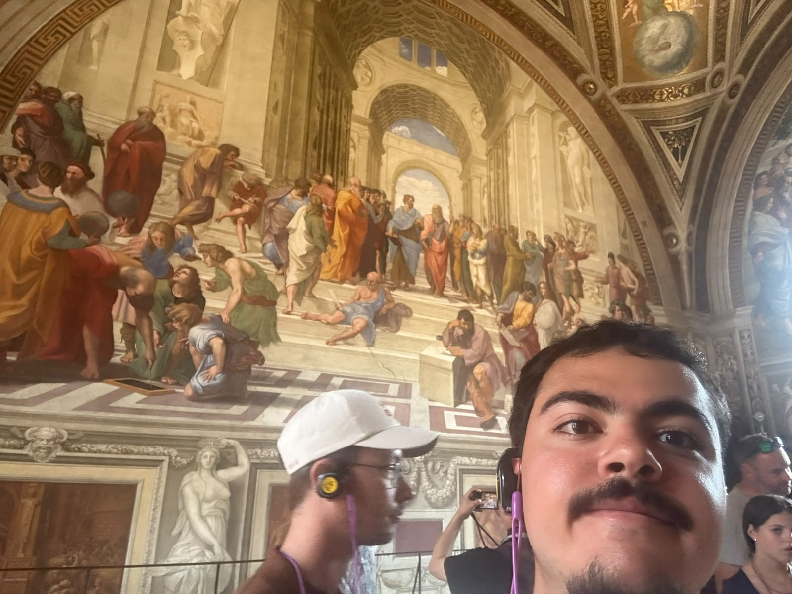
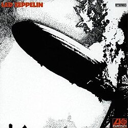
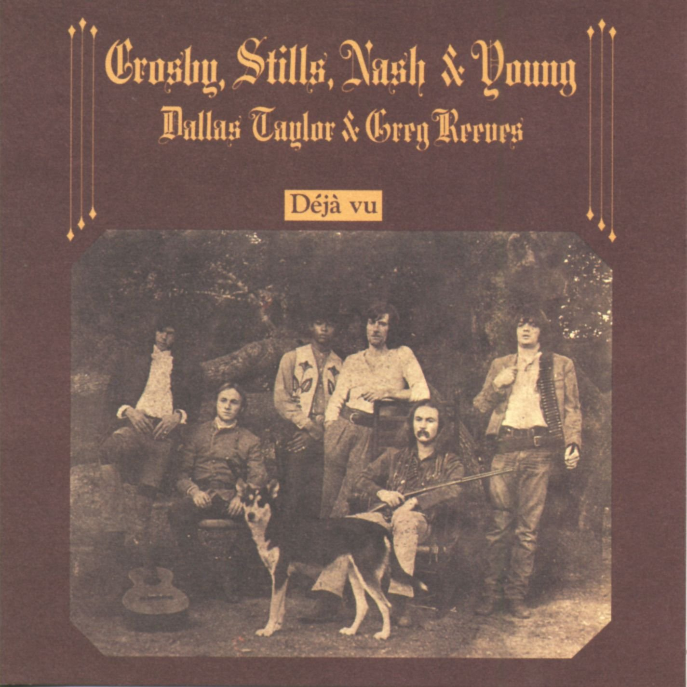
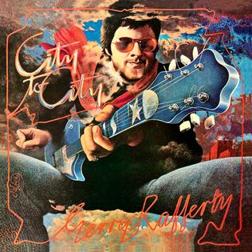
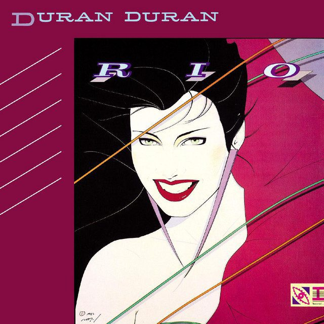

Things outside work: photos and records on repeat.
Photos


Music
- 1969

Led Zeppelin · Led ZeppelinFavorite album by my favorite bandListen - 1970

Déjà Vu · Crosby, Stills, Nash & YoungListen - 1976África Brasil · Jorge BenFavorite Brazilian albumListen
- 1978

City to City · Gerry RaffertyListen - 1982

Rio · Duran DuranCurrently on repeatListen